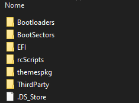
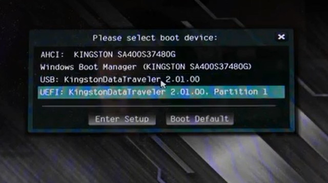
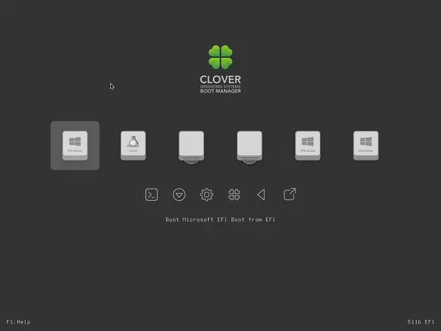

Bootando o Windows instalado em adaptador PCIE/NVME em UEFI
Introdução - Entendendo o Problema
O problema, embora obscuro de se achar informações, é bastante simples de se entender e não muito difícil de resolver: O problema do boot falhar ocorre pelo fato das primeiras placas mães UEFI serem incapazes e dar boot por PCIE... É só isso. É sério! E para resolver basta ter qualquer loader capaz de carregar o driver antes e depois bootar a partição... É sério! É só isso.
Solucionando o problema
Parte 1 - Preparando a pasta de Boot
Abra a página do CloverBootloader, baixe a versão mais recente do o arquivo CloverV2-XXXX.zip e extraia para uma pasta, você vai ver essa estrutura de arquivos:
Copie o arquivo do driver que está em:
EFI\CLOVER\drivers\off\UEFI\Other\NvmExpressDxe.efi
Copie-o para a pasta:
EFI\CLOVER\drivers\UEFI
Agora renomeie o arquivo:
EFI\CLOVER\config-sample.plist
Para:
EFI\CLOVER\config.plist
Parte 2 - Colocando o booloader em um lugar visível
Você agora precisa de uma partição ESP visível para a sua placa mãe, pode ser uma já criada num outro disco ou apenas crie uma partição ESP no seu pendrive (se você sabe usar Linux basta usar o gdisk, criar uma partição do tipo ef00, de pelo menos 550M e formatar em FAT32 ou siga este tutorial caso você queira fazer através do Windows).
Com o pendrive (ou a partição em um disco secundário) preparada basta copiar a pasta EFI para a raiz a partição ESP, se você está usando dualboot com Linux, basta copiar a pasta CLOVER para dentro da partição ESP e referenciá-la com o seu bootloader desejado.
Parte 3 - Selecione o dispositivo
Basta acessar a bios da sua placa mãe e selecionar o pendrive ou a entrada da partição ESPdesejada:
Se você fez tudo certo o bootloader vai ser carregado e basta selecionar o Windows:
EXTRA - Apenas para quem utiliza Dualboot
Exemplo do arquivo de configuração para o systemd-boot
title Clover
efi /EFI/CLOVER/CLOVERX64.efi
Exemplo do arquivo de configuração para o GRUB
menuentry 'Clover' $menuentry_id_option 'gnulinux-simple-XXXX-XXXX' {
insmod part_gpt
insmod fat
search --no-floppy --fs-uuid --set=root XXXX-XXXX
chainloader /EFI/CLOVER/CLOVERX64.efi
}Lembre-se de substituir XXXX-XXXX pelo UUID da partição do Clover.